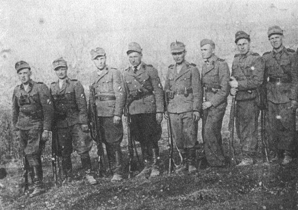
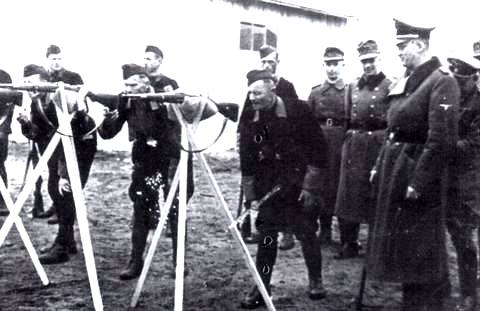
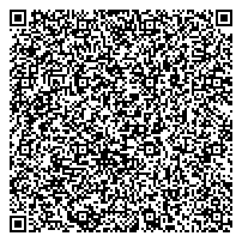

Коллаборационистские формирования сотрудничали с нацистскими оккупантами, помогая им в проведении карательных операций и других репрессивных мер против населения.
Коллаборационисты — это люди и формирования, которые сотрудничали с нацистами на оккупированных территориях. В Беларуси коллаборационистские формирования участвовали в карательных операциях, поиске и уничтожении партизан, а также в подавлении сопротивления местного населения.
Они формировались как из местных жителей, так и из пленных солдат Красной армии. Основные группы коллаборационистов включали полицаев и добровольные батальоны, которые были организованы нацистами для помощи в оккупационной политике.
Полицаи играли важную роль в поддержании нацистского режима на оккупированных территориях. Они помогали в осуществлении карательных операций, ловили партизан и обеспечивали порядок в зонах оккупации. Именно полицаи часто сопровождали карательные отряды, уничтожавшие деревни и их жителей.
Отсканируйте QR-код для выполнения задания по теме "Деятельность коллаборационистских формирований":
